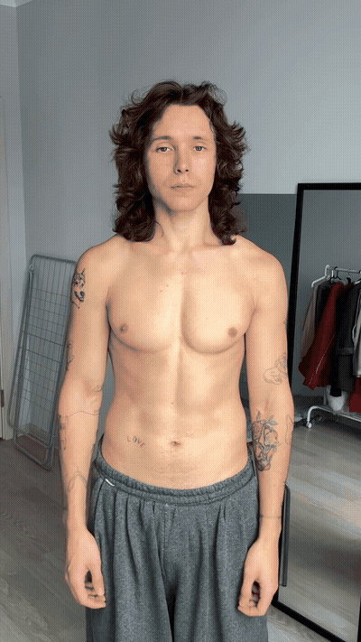
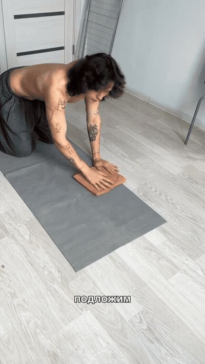
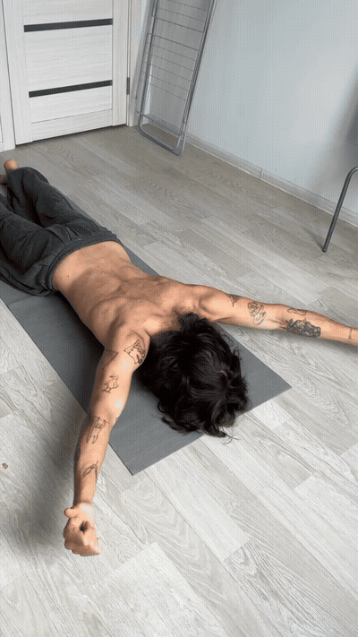

The creator explains a shoulder that appears to drop and relates it to the ribcage and scapular position. Use this section only to understand the setup shown; it is not a clinical assessment.

Place a folded towel under the left side of the chest while keeping the right side against the mat. The reel emphasizes avoiding an exaggerated lumbar arch and keeping the thumbs oriented upward.

From the prone setup, gently lift the upper chest and arms with the thumbs up while exhaling. Gradually explore the movement, then lower under control; the creator recommends adding thoracic-rotation work to training afterward.
Do not force symmetry. This guide preserves the side-specific setup shown in the reel; use a qualified professional for individualized side selection or correction.
Keep the lumbar spine quiet. Reduce the lift if the movement shifts into a pronounced low-back arch instead of a controlled upper-chest motion.
Stop for symptoms. Stop for pain, numbness, tingling, dizziness, or radiating symptoms; the creator's explanation is not a diagnosis.